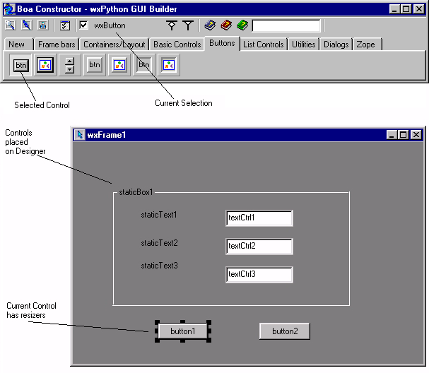

| Getting Started Guide for Boa Constructor |
| Getting Started Guide for Boa Constructor |
The Designer will display the frame on the screen. The Designer
displays
the frame as it would appear at runtime. This frame is referred to as
the
'Designer'. The Designer also creates two new pages in the Editor. The
first one is
referred to as the Data View, the second one is the Sizer View.
The 'Designer' is used to design the layout of the Frame or Dialog. You can place components in the pane, resize them, move them or delete them. You can also place components within other components.
To create a component, you select the appropriate component from the Palette. Components are grouped for easier access, e.g. the basic controls are together. Once you have selected a control, the status bar in the Palette shows the selected control.
To place the component move the cursor onto the Designer. Click the
mouse once in the position where the component is required. Once the
component
is on the form, it can be moved and resized. You move it by placing the
mouse within the component and dragging it. You resize it by dragging
one of the eight markers shown on the edge of a selected control.
Changes made through the Designer are saved into the applications
source
code. Changes are saved when you press the Post button .
There are two Post buttons, one on the Editor's toolbar and one on the
Inspector's toolbar. Pressing either will close the Designer and the
Data View
and
generate the source code for the changes. Changes can also be posted by
closing the Frame.
To Cancel all changes made since opening the Designer, click the
Cancel
button  on the
Editor
or Inspector toolbar.
on the
Editor
or Inspector toolbar.

The Frame1 titled window above is the Frame Designer window, a
wx.Panel (found on the Containers/Layout palette) has been placed in
the wx.Frame and into it two wx.Button controls (found on the Buttons
palette) have been placed. The button2 control is currently
selected and you can see its properties shown in the Inspector window.
Note: The controls on the Utilities(Data) tab you should drop onto the Data View tab and all sizer type containers (on Containers/Layout tab) you have to drop onto the Sizer View.
| Getting Started Guide for Boa Constructor |